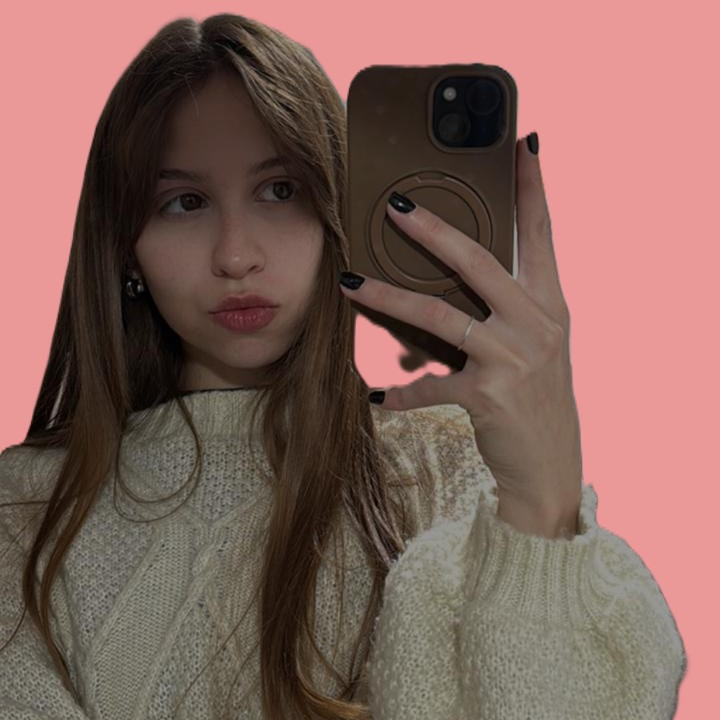
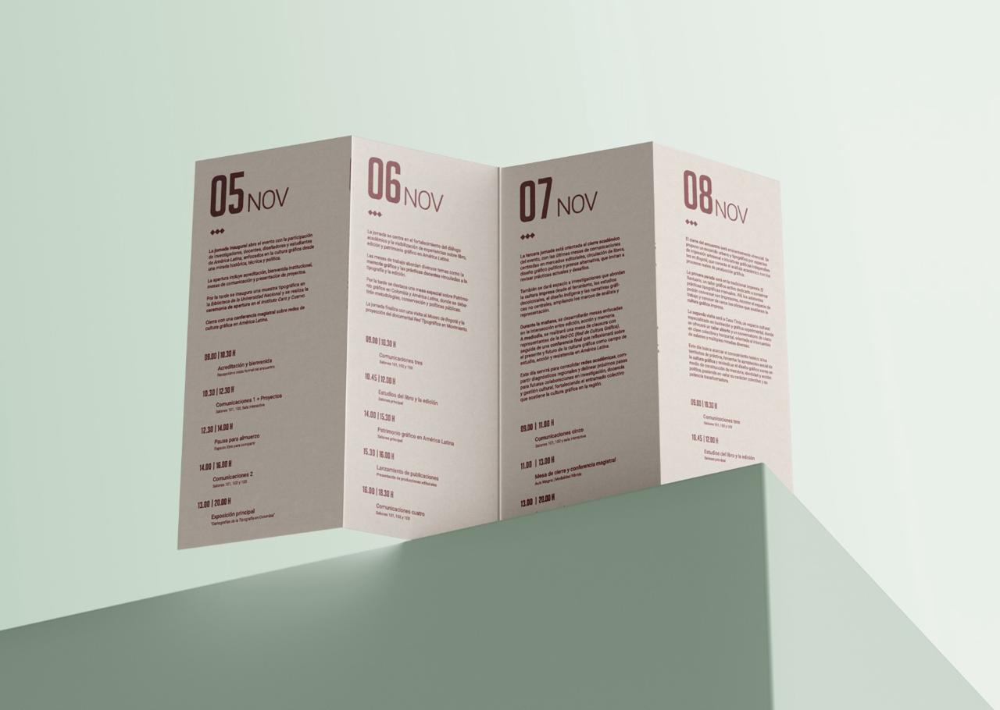
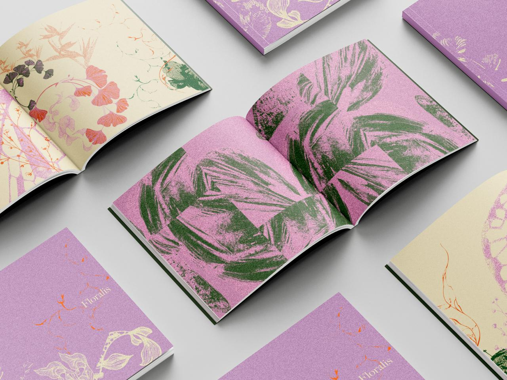

LARA PRIETO
Diseño gráfico / Comunicación visual
LinkedIn: http://www.linkedin.com/im/laraprieto7
laraprieto7@gmail.com
SOBRE MI
Soy estudiante avanzada de Diseño y comunicación visual, actualmente estoy cursando el cuarto año de la carrera. Mi aprendizaje me permitió explorar diferentes áreas del diseño y desarrollar proyectos vinculados con la comunicación visual, la tipografía, la composición, la identidad y el diseño editorial.
Me interesa especialmente encontrar nuevas maneras de comunicar ideas a través de recursos gráficos, combinando concepto, composición y lenguaje visual. A lo largo de la carrera trabajé en proyectos individuales y grupales que me permitieron experimentar con diferentes técnicas, herramientas y sistemas de representación graficos visuales.
Considero al diseño como una herramienta para transformar conceptos en experiencias visuales claras, atractivas y funcionales
FORMACIÓN
Estudiante de 4.º año
Formación académica orientada al desarrollo conceptual y técnico de proyectos de comunicación visual, con exploración de diferentes disciplinas y herramientas del diseño gráfico. A lo largo de la carrera desarrollé proyectos relacionados con identidad, tipografía, morfología, medios expresivos, diseño editorial, señalética y comunicación digital.
PROYECTOS
Una selección de trabajos realizados durante mi formación académica en Diseño Gráfico.

Espacio tipográfic I
Diseño de un menú experimental donde la tipografía funciona como recurso principal de composición y comunicación.
Espacio tipográfic II
Diseño de un cronograma que organiza información mediante jerarquías internas, ritmo y composición tipográfica.

Medios expresivos III
Trabajo experimental basado en la exploración de formas, estructuras y transformaciones visuales morfologicasmorfológicas de las imagenes.
HERRAMIENTAS DIGITALES
Manejo de programas aplicadas al diseño y la comunicación
- Illustrator
- Photoshop
- Indesing
- Lightroom